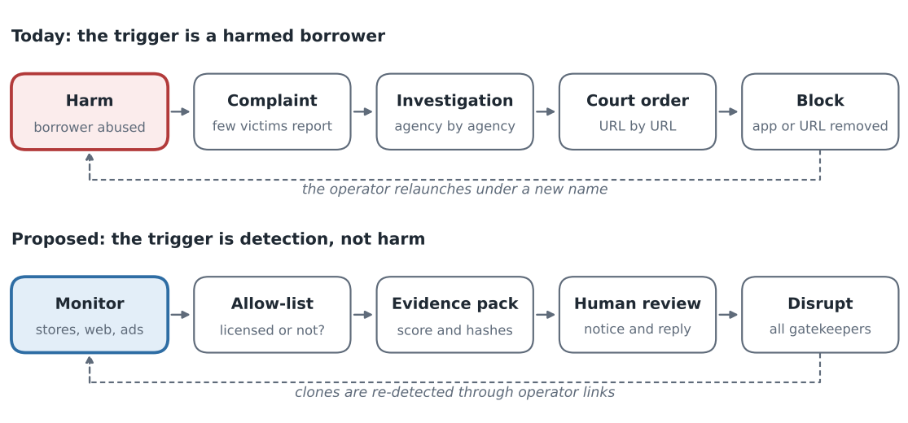
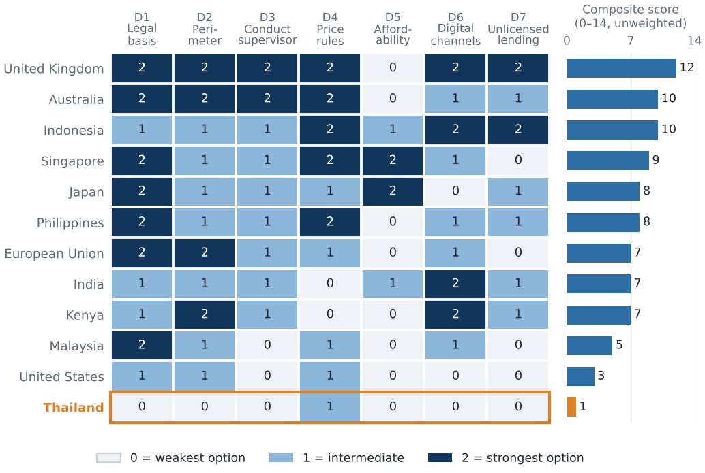
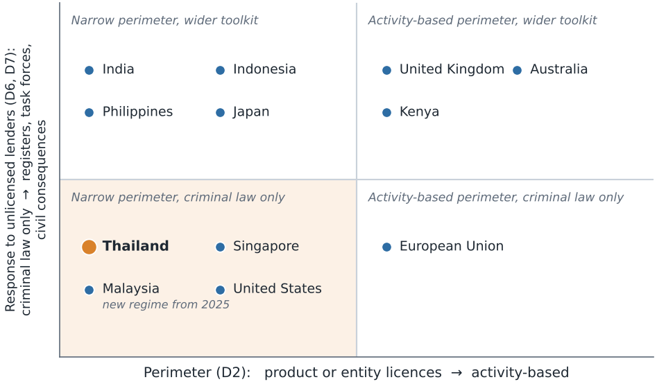
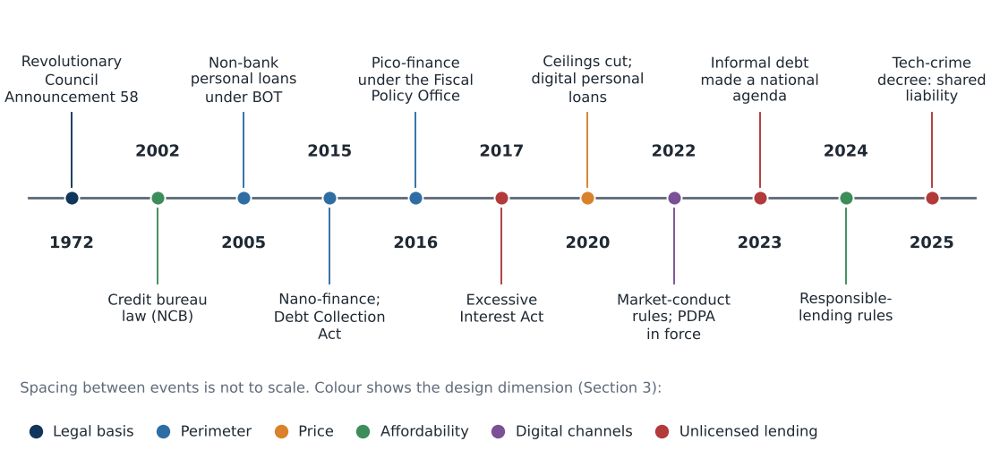
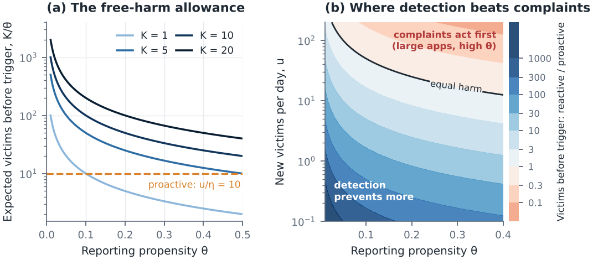
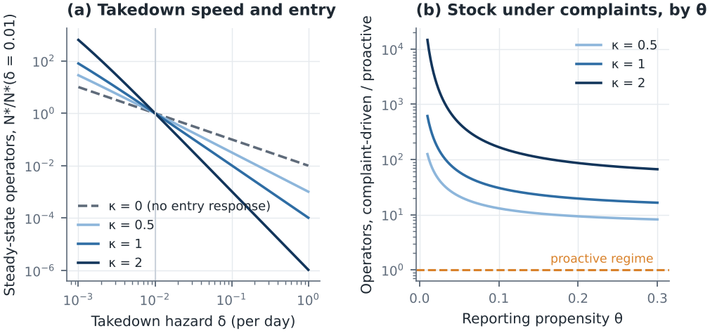
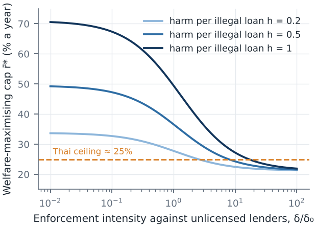
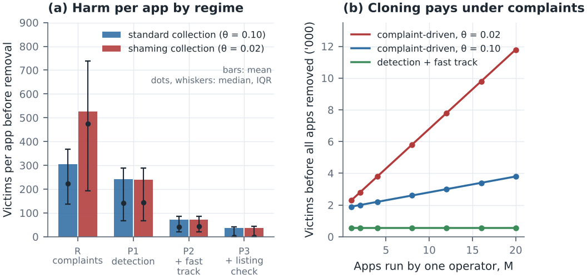
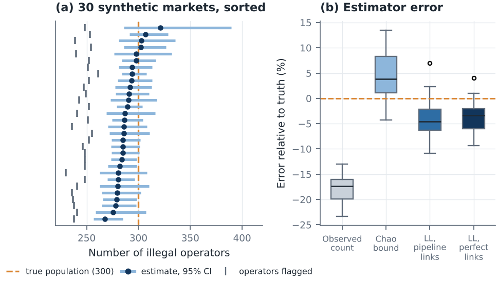
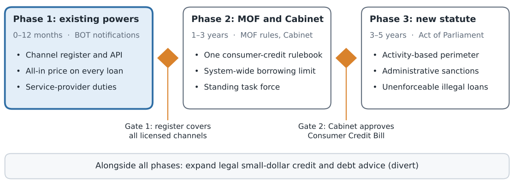

November 10, 2026
Non-bank lenders now originate a large share of unsecured consumer credit in emerging Asia, increasingly through mobile apps, and unlicensed digital lenders have followed them. This paper asks how authorities regulate non-bank consumer lenders, and what Thailand should change. We first code twelve regimes—Thailand, India, Indonesia, the Philippines, Malaysia, Singapore, Japan, Kenya, the United Kingdom, Australia, the European Union and the United States—on seven design dimensions: legal basis, perimeter, lead supervisor, price regulation, affordability, digital-channel controls and the response to unlicensed lending. Thailand scores lowest on the provisional coding: its rules are strict in substance but rest on secondary legislation, are drawn around products rather than activities, cap annual rates rather than the total cost of short loans, and meet unlicensed lending with criminal law alone. We then develop three models. The first shows that complaint-driven enforcement grants every illegal app a “free-harm allowance” of \(K/\theta\) victims—\(K\) the complaints needed to act, \(\theta\) the probability a victim reports—independent of the app’s size, which rewards fragmentation into clone apps and is weakest against the most abusive operators. The second shows that the steady-state number of illegal operators falls more than proportionally with the speed of takedown. The third shows that the welfare-maximising price cap falls as enforcement against unlicensed lenders rises, so the two are complements. Monte Carlo illustrations and a validated open-source detection pipeline quantify these mechanisms under stated, hypothetical parameters. We close with a three-phase roadmap ordered by the legal instrument each step requires, and a research agenda built on reforms that serve as natural experiments.
Regulating Non-Bank Lenders in the Digital Age:
A Comparative Study of Twelve Regimes, a Theory of
Complaint-Driven Enforcement, and a Roadmap for Thailand
Thanatchon Chongmankhong
November 10, 2026
Keywords: non-bank financial institutions; consumer
credit regulation; digital lending; interest-rate caps; enforcement;
supervisory technology; comparative financial regulation;
Thailand.
JEL codes: G18, G23, G28, K22, K23, K42.
Consumer lending outside the banking system has grown faster than almost any other segment of retail finance in emerging Asia. Non-bank lenders—personal-loan companies, title lenders, microfinance and “pico” lenders, peer-to-peer platforms and, increasingly, app-based lenders—now serve borrowers that banks consider too small, too risky or too expensive to reach. In Thailand, where household debt has stayed close to 90 per cent of GDP in recent years, non-banks are central to personal, vehicle-title and hire-purchase lending. The same technologies that lowered the cost of legitimate small-ticket lending have also lowered the cost of illegal lending: an app can reach millions of phones in days, harvest a borrower’s contact list at installation, and collect by threatening to shame the borrower in front of everyone they know.
Regulators responded in the same decade, but along very different paths. The United Kingdom capped the total cost of high-cost short-term credit in 2015. Japan had already capped both price and total borrowing in 2006. India issued detailed digital lending rules in 2022 and a public directory of licensed lenders’ apps later. Kenya placed digital lenders under its central bank in 2021–22. Indonesia rebuilt its financial-sector law in 2023 and runs a standing task force against illegal lenders. The European Union’s revised Consumer Credit Directive applies from November 2026. Thailand also reformed—most visibly through responsible-lending rules in force from 2024—but it did so within an architecture dating back, in its legal foundations, to 1972.
This paper asks two questions. How do authorities around the world regulate non-bank consumer lenders, and which design choices recur? And what should Thailand change, in which order, and with which legal instruments? Answering the second question requires more than a list of foreign practices. Countries differ in market structure, legal tradition and enforcement capacity, so the paper combines a structured comparison with a small body of theory that explains why certain combinations of tools work together—and why one of Thailand’s defaults, waiting for a victim’s complaint before acting against unlicensed lenders, is ill-suited to the harm in question (1).

The paper makes four contributions.
A coding scheme and a comparative dataset. We define seven design dimensions—legal basis (D1), perimeter (D2), lead supervisor (D3), price regulation (D4), affordability (D5), digital-channel controls (D6) and the response to unlicensed lending (D7)—and code twelve regimes on each, with a published codebook (13).
A Thai baseline. We place Thailand’s fragmented architecture—five authorities, a perimeter drawn around products, delegated legal instruments—systematically against Asian and global peers.
A theory of complaint-driven enforcement. Three tractable models yield closed-form results: a size-independent “free-harm allowance” under complaint thresholds (1); a fragmentation incentive (2); a more-than-proportional effect of takedown speed on the stock of illegal operators (4); and complementarity between price caps and enforcement (5).
A sequenced roadmap. We sort reform options by the legal instrument each requires—Bank of Thailand (BOT) notification, Ministry of Finance (MOF) or Cabinet action, or an Act of Parliament—and pair each with the comparative precedent and the model lever it uses.
On the provisional coding, Thailand records the lowest composite score of the twelve regimes. The gap is one of instrument rather than ambition: Thai rate ceilings are among the lowest of middle-income peers and its conduct rules are detailed, but they rest on ministerial notifications issued under a 1972 Revolutionary Council announcement, which cannot create administrative fines, investigative powers or civil consequences for unlicensed lenders. Theory explains why the missing middle layer matters. Under complaint-driven enforcement, each illegal app harms on average \(K/\theta\) borrowers before enforcement is even triggered; with plausible reporting propensities this allowance is large, it rises precisely where collection is most abusive, and it rewards operators for splitting into many small apps. Because faster takedown also deters entry, the number of illegal operators falls more than proportionally with the speed of detection. And because unlicensed supply absorbs borrowers rationed out by price caps, the optimal cap is lower where enforcement is stronger—an argument for building enforcement capacity before tightening price rules.
The paper connects four literatures. Work on the architecture of financial supervision contrasts integrated, sectoral and “twin peaks” models and, more recently, entity- versus activity-based regulation of fintech . The consumer-finance literature documents behavioural biases that justify price and conduct rules , the trade-offs of interest-rate caps , and mixed evidence on the welfare effects of high-cost credit . The law-and-economics literature on enforcement compares ex ante regulation with ex post liability and analyses gatekeeper strategies ; we apply it to the reporting behaviour of victims of illegal lending. Finally, a growing literature on supervisory technology and on predatory loan apps motivates the detection pipeline in 8.
2 describes Thailand’s market and the digital lending problem. 3 sets out the analytical framework and 4 the method. 5 presents the comparative evidence and 6 places Thailand within it. 7 develops the models and 8 quantifies them. 9 proposes the roadmap, 10 the research agenda and limitations, and 11 concludes.
Thai consumer credit is supplied by four layers. Commercial banks and specialised financial institutions serve borrowers with documented income. Licensed non-banks—credit-card issuers, supervised personal-loan companies, nano-finance and vehicle-title lenders—serve a riskier segment at higher, but capped, prices. Pico-finance companies, licensed province by province by the Fiscal Policy Office, serve small local borrowers. Below them sits an informal and illegal layer: community moneylenders, daily-repayment “loan sharks” and, since the late 2010s, unlicensed lending apps and websites.
The size of the bottom layer is not measured systematically. In late 2023 the government declared informal debt a national agenda; a registration drive run by the Ministry of Interior reportedly drew more than 100,000 debtors within weeks, reporting debts in the order of THB 10 billion (approximate figures from official statements as reported at the time). These registrations mostly concern offline lenders and are self-selected, so they bound the problem from below rather than measure it.
Illegal digital lending comes in five business models with different harms and legal hooks ([tab:taxonomy]). The distinction matters for both detection and policy: advance-fee scams never lend and are fraud; predatory unlicensed lenders lend at extreme effective rates and collect through intimidation; rent-a-licence arrangements hide unlicensed operators behind licensed partners.
P2.6cmLLP3.1cm Type &
Business model & Observable signals & Strongest legal hook
T1 Predatory unlicensed lender & Small loans, fees deducted upfront,
7–14 day tenors, collection by contact-shaming & No licence match;
sensitive app permissions; harassment in reviews; clone clusters &
Excessive-interest law; data protection; debt-collection law
T2 Advance-fee loan scam & Never lends; demands “processing” or
“insurance” fees & Upfront-fee language; impersonation of licensed
brands; mule accounts & Criminal fraud; technology-crime
decree
T3 Rent-a-licence & Unlicensed operator lends or collects through a
licensed partner & Licensee’s name on an unregistered channel &
Market-conduct and outsourcing rules
T4 Lead generator & Collects applications and data, sells them to
unlicensed lenders & Comparison front end; broad data-sharing
clauses & Data protection; advertising rules
T5 Loan shark with online acquisition & Daily-repayment loans
marketed via messaging accounts and social media & Daily-repayment
terms; messaging IDs; phone numbers & Excessive-interest law;
criminal code
Three features of this market shape the policy problem. First, operators are frequently offshore and judgment-proof; bank accounts used to disburse and collect are often held by nominees. Second, the harm suppresses its own reporting: a borrower threatened with exposure to family and employer has strong reasons not to complain, and many borrowers believe that, having “agreed” to the loan, they have no standing. Third, entry is cheap and repeatable, so a removed app is quickly replaced by a clone. Security researchers have documented predatory “SpyLoan” apps on Google Play targeting Thailand among other markets, and comparable markets show how large such ecosystems can grow: a working group of the Reserve Bank of India found that roughly 600 of about 1,100 lending apps available to Indian Android users were illegal .
The BOT’s perimeter is entity-based: it licenses and supervises lenders, so an unlicensed lender is by definition outside its supervision. Action against unlicensed lenders is distributed across the police, the Ministry of Digital Economy and Society (website blocking under court order), the Personal Data Protection Committee, and the Ministry of Interior (debt collection). No agency owns the task of finding illegal digital lenders. In practice the trigger for action is a complaint, and the slowest step runs from evidence to a court-ordered block of a specific URL. 7 shows why this default is particularly poorly matched to the harm.
Non-bank credit regimes differ along seven design dimensions. Each answers a distinct market failure and carries a known trade-off ([tab:dimensions]).
P2.35cmP3.1cmLP2.9cm
Dimension & Question & Main options & Key trade-off
D1 Legal basis & What instrument creates the regime? & Dedicated
statute; provisions in a general financial statute; secondary or
delegated legislation & Durability versus speed of amendment
D2 Perimeter & What brings a lender inside? & Product licences;
entity licences; activity-based (“anyone who lends to consumers as a
business”) & Coverage versus supervisory cost
D3 Lead supervisor & Who supervises conduct? & Several
authorities; central bank or integrated regulator; dedicated conduct
regulator & Data and expertise versus focus on conduct
D4 Price & Is the price of credit limited? & No cap; annual-rate
cap; total-cost or per-day cap & Protection versus credit
rationing
D5 Affordability & Is borrowing limited relative to income? &
Lender-level assessment; partial limits; system-wide limit via the
credit bureau & Over-indebtedness versus access
D6 Digital channels & Are apps, platforms and agents covered? &
Nothing specific; rules and registration; public register of licensed
channels with platform checks & Consumer information versus
upkeep
D7 Unlicensed lending & What happens to lenders outside the
perimeter? & Criminal law only; civil or administrative
consequences; standing task force or unenforceability & Deterrence
versus due process
Architecture (D1, D3). The literature on supervisory structure contrasts integrated, sectoral and twin-peaks models . Twin peaks separates prudential from conduct supervision, so that consumer protection is not crowded out by stability concerns. A central bank that supervises consumer credit brings data and credibility but may rank conduct below stability; a ministry brings democratic accountability but often lacks supervisory capacity. The legal basis matters independently: delegated instruments can be changed quickly but rarely carry administrative sanctions or investigative powers.
Perimeter (D2). Entity- and product-based perimeters invite arbitrage at the boundary: re-labelling a product, re-chartering an entity or partnering with a licensee. Rent-a-bank partnerships in the United States are the canonical example. Activity-based perimeters follow the economic function and so reduce arbitrage, at the cost of a larger supervised population .
Price (D4). Behavioural evidence shows that borrowers underweight fees, rollover costs and the probability of repeat borrowing . Caps can limit exploitation but can also ration credit to high-risk borrowers ; Kenya’s 2016–19 bank-rate cap reduced lending to small borrowers . For very short loans, an annual-rate cap is a weak instrument because fees dominate cost; total-cost and per-day caps target fee stacking directly.
Affordability (D5). Lender-level creditworthiness assessments cannot see borrowing from other lenders. System-wide limits, enforced through a credit bureau, address multi-lender stacking but require complete reporting by every lender.
Digital channels (D6). Consumers cannot easily verify whether an app, website or messaging account belongs to a licensee. Public registers of licensed channels and duties on platforms to check them address this information asymmetry and turn app stores into gatekeepers .
Unlicensed lending (D7). Ex ante control dominates ex post liability when offenders are judgment-proof, victims do not sue and the regulator has an information advantage ; the two can be complements when each alone is imperfect . Making unlicensed loans unenforceable reduces the expected return to illegal lending without requiring a conviction, and standing task forces reduce the time between detection and disruption.
The dimensions interact, and the interactions are the core of the policy argument. A tight price cap (D4) without enforcement against unlicensed lenders (D7) risks pushing rationed borrowers to illegal supply; 5 formalises this complementarity. A wide perimeter (D2) without channel controls (D6) leaves consumers unable to tell who is inside it. And affordability limits (D5) are only as good as the coverage of the credit bureau, which depends on the perimeter (D2).
The study combines three methods. Functional comparison reads each regime for how it solves the same problems—who may lend, at what price, to whom, through which channels, and what happens to those who lend without permission—rather than for what its institutions are called . Structured coding places each regime on each dimension using ordinal categories (0, 1, 2) defined in a codebook (13), in the spirit of leximetric comparative law ; ordinal categories avoid the false precision of continuous scores. Process tracing reconstructs, for six reforms, the trigger, the instrument chosen and the observed effects: Japan (2006), the United Kingdom (2014–15), India (2021–25), Kenya (2021–22), Indonesia (2016–24) and the Philippines (2019–22).
Cases were chosen to vary the explanatory dimensions while keeping a core of comparable markets ([tab:cases]).
P4.3cmP4.1cmL Group &
Cases & Rationale
Most-similar Asian peers & India, Indonesia, Philippines, Malaysia
& Middle-income; fast digital-credit growth; illegal-app
problems
High-income Asian benchmarks & Singapore, Japan & Mature regimes
with hard price and volume limits
Central-bank model outside Asia & Kenya & Central bank licensing
digital lenders directly
Conduct-regulator models & United Kingdom, Australia &
Activity-based perimeters; total-cost price rules
Supranational standard & European Union & Harmonised rules
applying from November 2026
Cautionary case & United States & Fragmented state regimes;
rent-a-bank evasion
China is discussed as context because of the scale of its peer-to-peer lending crackdown (2016–2020), which displaced operators to South and Southeast Asia, but it is not coded: its consumer-credit framework rests largely on judicial interpretation and platform rules that do not map cleanly onto the seven dimensions.
Codings draw on statutes, regulations and central-bank directions, supplemented by IMF, World Bank and BIS documents and academic studies of each reform. Each regime is coded for the law in force at a stated date. Two threats to validity deserve emphasis. First, coding captures law on paper, not enforcement in practice; dimension D7 partly compensates by coding institutional structures for enforcement. Second, ordinal codes compress real differences: a code of 2 on price (D4) means a total-cost or per-day rule, whether it binds at 0.1 or 0.8 per cent a day. The composite score reported in 2 is an unweighted sum intended only for orientation. In this version, codings are provisional: they have not yet been validated by independent local experts, and inter-coder reliability has not been measured.
The Reserve Bank of India registers and supervises non-bank financial companies under Chapter IIIB of the RBI Act 1934 and, since 2021, applies a scale-based framework with four layers of rising requirements. Its 2022 digital lending guidelines require loans to flow directly between the borrower’s and the lender’s bank accounts, a standard key fact statement with an all-in annual percentage rate, a cooling-off period, and need-based data collection without access to contacts or media files. Directions issued in 2025 consolidated these rules and introduced a public directory of licensed lenders’ apps. There is no general rate cap; microfinance caps were replaced in 2022 by a household repayment limit of 50 per cent of income. A draft bill to ban unregulated lending was published for consultation in December 2024.
The Financial Services Authority (OJK) licenses multifinance companies and peer-to-peer lenders. Law No. 4 of 2023 on the financial sector widened its powers, including over illegal activity. OJK has capped the total daily “economic benefit” of consumer peer-to-peer loans, stepping the cap down towards 0.1 per cent a day by 2026, and limits the number of platforms from which one borrower may borrow. A standing inter-agency task force, now known as Satgas PASTI, publishes lists of illegal entities and has shut down several thousand illegal online lenders since 2018, with blocking carried out by the communications ministry.
Lending and financing companies are registered and supervised by the Securities and Exchange Commission. Online lending platforms must be registered (2019), and a 2019 circular bans unfair collection practices including contact-shaming. Central Bank Circular 1133 (2021) capped small, short-term unsecured loans at about 6 per cent a month nominal, 15 per cent a month effective, and total charges at 100 per cent of principal; the SEC extended these caps to its registrants. The Financial Products and Services Consumer Protection Act (2022) added market-conduct powers.
Moneylenders are licensed by the Ministry of Local Government Development under the Moneylenders Act 1951, with caps of 12 per cent a year for secured and 18 per cent for unsecured loans. A Consumer Credit Act passed in 2025 creates a dedicated regulator for non-bank credit and buy-now-pay-later. Bank Negara Malaysia publishes a Financial Consumer Alert List of unlicensed entities.
The Ministry of Law’s Registry of Moneylenders licenses moneylenders under the Moneylenders Act 2008. Since 2015, interest and late interest are each capped at 4 per cent a month and all charges together may not exceed the principal. Total unsecured borrowing from moneylenders is limited relative to income and checked through a dedicated credit bureau. Unlicensed moneylending and harassment carry severe criminal penalties.
The amendment of the Money Lending Business Act, fully in force by 2010, cut the legal ceiling to 15–20 per cent a year according to loan size, abolished a “grey zone” up to 29.2 per cent, and limited total unsecured borrowing from moneylenders to one-third of annual income, checked through designated credit bureaus. The market contracted sharply; evidence on displacement to illegal lenders is mixed. A 2008 Supreme Court decision held that black-market lenders cannot set off the principal they lent against victims’ claims.
The Central Bank of Kenya (Amendment) Act 2021 brought non-deposit-taking digital credit providers under the central bank, with regulations in 2022. Only a fraction of applicants were licensed in the first rounds, and Google Play began requiring a central-bank licence for Kenyan loan apps. The data-protection commissioner has fined digital lenders for contacting borrowers’ third parties.
Consumer credit moved to the Financial Conduct Authority (FCA) in 2014. Lending to consumers is a regulated activity under the Financial Services and Markets Act 2000 (FSMA), whoever conducts it. Since 2015, high-cost short-term credit has been capped at 0.8 per cent a day, default fees at £15 and total cost at 100 per cent of the amount borrowed. Lending without authorisation is a criminal offence, agreements made by unauthorised lenders are unenforceable against the borrower (FSMA s.26), and dedicated Illegal Money Lending Teams investigate proactively.
ASIC supervises credit under the National Consumer Credit Protection Act 2009. Small-amount credit contracts are limited to an establishment fee of 20 per cent and a monthly fee of 4 per cent, and other consumer credit to 48 per cent a year including fees. Statutory responsible-lending obligations and a product-intervention power (2019) complete the toolkit.
Directive (EU) 2023/2225 applies from 20 November 2026. It extends coverage to small loans and most buy-now-pay-later, requires member states to adopt measures against excessive pricing—caps on interest, the annual percentage rate or total cost—and requires non-bank creditors to be authorised or registered and supervised.
States license lenders and set usury limits; the Consumer Financial Protection Bureau polices unfair, deceptive or abusive practices federally. The Military Lending Act caps loans to service members at 36 per cent all-in. Rent-a-bank partnerships and tribal lending exploit gaps between state and federal regimes—the closest analogue to rent-a-licence arrangements in Thailand.
[tab:matrix] reports the coding in words and 2 in ordinal form. 3 projects the regimes onto the two dimensions most relevant to illegal lending: the breadth of the perimeter (D2) and whether the response to unlicensed lenders extends beyond criminal law (D6 or D7).
P1.55cmP1.45cmP1.45cmP1.75cmP1.9cmLP1.95cmP1.95cm
Regime & D1 Legal basis & D2 Perimeter & D3 Lead supervisor
& D4 Price & D5 Affordability & D6 Digital channels & D7
Unlicensed lending
Thailand & Secondary legislation & Product
& Central bank (delegated) and four others & Annual rate per
product & Lender-level & Nothing specific & Criminal law
only
India & General statute & Entity & Central bank &
Disclosure; no general cap & Microfinance household limit &
Rules; public app directory & Criminal; ban bill drafted; reporting
portal
Indonesia & General statute & Entity & Integrated regulator
& Daily total-cost cap (P2P) & Platforms-per-borrower limit
& Licensing; list of legal platforms & Standing task force;
blocking
Philippines & Dedicated statute & Entity & Securities
regulator; central-bank caps & Monthly and total-cost caps &
Lender-level & Platform registration & Takedowns;
revocations
Malaysia & Dedicated statute (new 2025) & Entity, moving to
activity & Ministry, moving to new regulator & Annual cap &
Lender-level & Alert list & Criminal law
Singapore & Dedicated statute & Entity & Ministry registry
& Monthly and total-cost caps & System-wide limit &
Advertising limits & Severe criminal penalties
Japan & Dedicated statute & Entity & FSA and prefectures
& Annual cap, 15–20% & System-wide: one-third of income &
Nothing specific & Criminal; no set-off of principal
Kenya & General statute & Activity (digital credit) &
Central bank & None & Lender-level & Licence checked by app
store & Licensing; data-protection fines
United Kingdom & Dedicated statute & Activity & Conduct
regulator & Total-cost cap (short-term credit) & Lender-level
rules & Promotions regime; platform duties & Criminal;
unenforceable; proactive teams
Australia & Dedicated statute & Activity & Conduct regulator
& Fee caps; 48% all-in & Statutory responsible lending &
Channel-relevant intervention power & Civil penalties
European Union & Dedicated directive & Activity & National
authorities & Caps required; form open & Creditworthiness
assessment & Advertising rules & Authorisation required
United States & State statutes & Entity, by state & States
and federal bureau & State usury; 36% for service members &
Varies & Varies & Varies; rent-a-bank gaps


Four lessons recur across the cases.
Price and enforcement move together. Regimes that tightened prices—the United Kingdom in 2015, Japan in 2006, the Philippines in 2021, Indonesia from 2023—also tightened the perimeter or enforcement at the same time. None relied on a cap alone.
Short loans need total-cost rules. Every regime that regulates the price of very short loans does so with a total-cost or per-period cap, not an annual-rate cap.
Digital channels are now regulated directly. Registers of licensed apps (India), licence checks by app stores (Kenya), lists of legal platforms (Indonesia) and platform duties (United Kingdom) have joined entity licensing.
The strongest deterrent is economic. Unenforceability (United Kingdom) and the denial of principal set-off (Japan) remove the return to illegal lending without waiting for a conviction.
Thailand’s central bank supervises most non-bank consumer lending, but by delegation under MOF notifications, product by product, with other lenders spread across four more authorities ([tab:thai]). 4 traces how the architecture accumulated.
LP3.3cmP4.2cmP2.0cm
Segment & Supervisor & Legal basis & Ceiling (% a
year)
Commercial banks & BOT & Financial Institutions Businesses Act
2008 & As for products
Credit cards; supervised personal loans; nano-finance; vehicle-title
loans; digital personal loans (non-banks) & BOT, by delegation &
Revolutionary Council Announcement No. 58 (1972) and MOF notifications
& 16; 25; 33; tiered
Pico-finance & Fiscal Policy Office (MOF) & MOF notifications
& 36
Car and motorcycle hire purchase & Office of the Consumer Protection
Board & Controlled-business notification & By vehicle type
Pawnshops & Ministry of Interior & Pawnshop Act 1962 &
Statutory
Savings cooperatives & Cooperative Promotion Department &
Cooperatives Act & Set by cooperatives
Debt collection by anyone & Debt Collection Supervisory Committee
& Debt Collection Act 2015 & –
Any unlicensed lender & None & Civil and Commercial Code s.654;
Excessive Interest Act 2017 & 15

Three strengths stand out. First, one supervisor sees banks and most non-banks together, with supervisory reporting and credit-bureau data—an informational advantage that conduct regulators elsewhere often lack. Second, the BOT’s responsible-lending rules (in force from 2024) go beyond many peers in addressing persistent revolving debt and fair treatment. Third, at 16–33 per cent a year for most products, Thai rate ceilings are among the lowest of middle-income peers.
Instrument (D1). A 1972 announcement plus ministerial notifications limits the sanctions and investigative powers available to the supervisor, and can be changed without Parliament. Thailand is the only regime in the sample whose non-bank consumer credit rules rest mainly on secondary legislation.
Seams in the perimeter (D2). Five authorities cover consumer lending, and lenders can re-label products to move between regimes. Peers that consolidated did so by defining the activity, not by merging agencies.
Price rules that miss short loans (D4). Annual-rate ceilings say little about fee-heavy loans of 7–30 days, which dominate illegal digital lending.
No limit across lenders (D5). Affordability is assessed lender by lender; Japan and Singapore cap total borrowing system-wide through the credit bureau.
Nothing between licence and prison (D6, D7). Thailand has no register of licensed lenders’ digital channels, no standing task force and no rule making unlicensed loans unenforceable.
Thailand shares the central-bank model with India and Kenya. The case for keeping it rests on concentrated expertise, credit data and institutional credibility. The case against is that conduct supervision may rank below stability, and that a perimeter covering pawnshops, cooperatives and hire purchase would stretch the BOT’s mandate. The United Kingdom and Australia chose separate conduct regulators; Malaysia is creating one. A middle path keeps the BOT as consumer-credit authority but gives it a statutory mandate and a dedicated conduct function. That choice is ultimately political; this paper sets out the trade-offs rather than settling it.
This section develops three models. Model 1 explains why complaint-driven enforcement under-performs against this harm; Model 2 ranks enforcement levers by their effect on the number of illegal operators; Model 3 links price caps to enforcement. Proofs are in 12; notation is summarised in [tab:notation].
P1.5cmLP1.5cmL Symbol &
Meaning & Symbol & Meaning
\(u\) & New victims per day of one
app & \(\eta\) & Hazard of
automated detection
\(\theta\) & Probability a victim
reports & \(D, D_P\) &
Processing delay, reactive and proactive
\(K\) & Complaints needed to
trigger action & \(M\) & Apps
run by one operator
\(\delta\) & Takedown hazard &
\(\kappa\) & Elasticity of entry to
operator value
\(r\) & Net flow profit of an
operator & \(\rho\) & Discount
rate
\(\bar{r}\) & Price cap & \(s(\delta)\) & Share of rationed
borrowers reaching illegal lenders
\(h\) & Harm per illegal loan &
\(b\) & Surplus per legal
loan
Assumption 1. Victims of an app arrive according to a point process with long-run rate \(u>0\). Each victim independently files a complaint with probability \(\theta\in(0,1)\). Under complaint-driven enforcement the authority acts after the \(K\)-th complaint, and removal follows after a processing delay \(D\). Under detection-driven enforcement, detection occurs at a hazard \(\eta\) independent of victims, and removal follows after a delay \(D_P\).
Proposition 1 (Free-harm allowance). Under complaint-driven enforcement, the expected number of victims before removal is \[\begin{equation} \mathbb{E}[V^R] = \frac{K}{\theta} + uD, \qquad \operatorname{Var}\!\left[V_K\right] = \frac{K(1-\theta)}{\theta^2}, \label{eq:allowance} \end{equation}\] where \(V_K\) is the number of victims up to and including the \(K\)-th complaint. The first term does not depend on the app’s size \(u\) or on the timing of arrivals.
The intuition is that complaints are a thinned sample of victims: to collect \(K\) complaints, an authority must wait for \(K/\theta\) victims on average, however quickly or slowly they arrive. With \(\theta = 0.05\) and \(K = 10\), every app carries an allowance of 200 victims before enforcement is triggered. 5(a) plots the allowance against \(\theta\).
Proposition 2 (Fragmentation). Let an operator spread a total victim flow \(U\) evenly across \(M\) apps. Under complaint-driven enforcement, expected victims before all apps are removed are \(MK/\theta + UD\), increasing linearly in \(M\). Under detection-driven enforcement they are \(U(1/\eta + D_P)\), independent of \(M\). If each victim yields margin \(m\) and each app costs \(c\), splitting into more apps is profitable under complaint-driven enforcement if and only if \(mK/\theta > c\), and never under detection-driven enforcement.
Proposition 3 (Dominance of detection). Detection-driven enforcement produces fewer expected victims than complaint-driven enforcement if and only if \[\begin{equation} \frac{1}{\eta} + D_P - D < \frac{K}{\theta u}. \label{eq:dominance} \end{equation}\] With equal processing delays, detection dominates for every app with \(u < K\eta/\theta\).
Remark 1 (Adverse selection in enforcement). If the reporting propensity \(\theta(a)\) falls with the abusiveness \(a\) of collection—because shaming and threats deter reporting—then \(\mathbb{E}[V^R]\) rises with \(a\) while \(\mathbb{E}[V^P]\) does not. Complaint-driven enforcement is therefore weakest against the most abusive operators.

5(b) maps [eq:dominance]. Complaint-driven enforcement only acts first for apps that are both very large and whose victims report readily—the upper right of the panel. For the long tail of small clone apps, and for any app that collects by shaming, detection dominates by orders of magnitude.
Assumption 2. Potential operators arrive at rate \(\lambda\) with entry costs drawn from a distribution \(F\). A live operator earns net flow profit \(r\) until takedown, which arrives at hazard \(\delta\); the discount rate is \(\rho\). An operator enters if the value of operating, \(V = r/(\rho+\delta)\), exceeds its entry cost.
The entry flow is \(\lambda F(V)\), and since each operator survives on average \(1/\delta\), the steady-state stock of operators is \[\begin{equation} N^* = \frac{\lambda F\!\left(r/(\rho+\delta)\right)}{\delta}. \label{eq:stock} \end{equation}\]
Proposition 4 (Takedown speed deters entry). Let \(\kappa = f(V)V/F(V)\) denote the elasticity of entry with respect to operator value. Then \[\begin{equation} \varepsilon_{N,\delta} = -1 - \kappa\,\frac{\delta}{\rho+\delta} < -1, \qquad \varepsilon_{N,r} = \kappa > 0. \label{eq:elasticities} \end{equation}\] Faster takedown reduces the steady-state stock more than proportionally, because it both shortens the life of existing operators and deters entry.
Corollary 1. Under complaint-driven enforcement the takedown hazard is approximately \[\delta_R(\theta) = \frac{1}{K/(\theta u) + D},\] which is increasing in \(\theta\). The steady-state stock of operators is therefore largest where victims are least likely to report.
4 sorts policy levers into three families. Levers that raise \(\delta\)—continuous detection, standardised evidence, fast-track blocking—have an elasticity above one in absolute value. Levers that lower \(r\)—unenforceability of illegal loans, interdiction of collection accounts, bans on the app permissions that give collectors leverage—act through the entry margin with elasticity \(\kappa\). Levers that raise entry costs—developer and advertiser verification, licence checks at listing, penalties for mule accounts—shift \(F\). 6 illustrates the magnitudes.

Assumption 3. A unit mass of borrowers has default probabilities \(p\) uniformly distributed on \([0, \bar p]\). Legal lenders break even at the rate \(r(p) = (\rho_0 + p)/(1-p)\), where \(\rho_0\) is their funding and operating cost. Under a cap \(\bar{r}\), legal lenders serve borrowers with \(p \le \hat p(\bar{r}) = (\bar{r}-\rho_0)/(1+\bar{r})\) and charge them \(\bar{r}\). Each served borrower generates surplus \(b\), less an exploitation cost \(\omega(\bar{r}- r(p))\) from paying above cost. A rationed borrower reaches an illegal lender with probability \(s(\delta)\), decreasing in enforcement intensity \(\delta\), and then suffers harm \(h\).
Welfare per borrower is \[\begin{equation} W(\bar{r},\delta) = \frac{1}{\bar p}\left[\int_0^{\hat p(\bar{r})} \big(b - \omega(\bar{r}- r(p))\big)\,dp \;-\; s(\delta)\,h\,\big(\bar p - \hat p(\bar{r})\big)\right]. \label{eq:welfare} \end{equation}\]
Proposition 5 (Optimal cap). At an interior optimum, the welfare-maximising cap solves \((\bar{r}-\rho_0)(1+\bar{r}) = A\), with \(A = (b + s(\delta)h)(1+\rho_0)/\omega\), so that \[\begin{equation} \bar{r}^* = \tfrac{1}{2}\Big[-(1-\rho_0) + \sqrt{(1-\rho_0)^2 + 4(\rho_0 + A)}\Big]. \label{eq:cap} \end{equation}\] The optimal cap is increasing in the harm \(h\) from illegal lending and decreasing in enforcement intensity \(\delta\). Moreover \(\partial^2 W/\partial\bar{r}\,\partial\delta = h\,s'(\delta)\,\hat p'(\bar{r})/\bar p < 0\): tighter caps and stronger enforcement are complements.
The intuition is straightforward. A tighter cap protects the borrowers who are still served but rations more borrowers out of legal credit. How costly that rationing is depends on where the rationed borrowers go—which is exactly what enforcement against unlicensed lenders controls. 7 shows that, under illustrative parameters, the optimal cap falls from about 50 to about 22 per cent a year as enforcement moves from weak to strong. The policy implication is one of sequencing: building enforcement against unlicensed lenders makes low caps safer.

This section quantifies the mechanisms of 7 and tests a detection pipeline. All results use synthetic data and hypothetical parameters; none is an estimate for the Thai market.
We simulate 200,000 illegal apps. Daily victim inflow is log-normal with a median of 5 and a log standard deviation of 1. Half of the apps collect by shaming, with reporting propensity \(\theta = 0.02\); the other half use standard collection, with \(\theta = 0.10\). Operators abandon apps at a rate of 1/180 a day, independently of enforcement. We compare four regimes:
R, complaint-driven: action after \(K = 10\) complaints plus \(D = 30\) days.
P1, detection with the same delay: detection hazard \(\eta = 0.5\) a day plus 30 days.
P2, detection with fast-track disruption: \(\eta = 0.5\) plus \(D_P = 7\) days.
P3, P2 plus an allow-list check at listing that stops half of the apps before they go live.
| Standard collection | Shaming collection | All apps | ||||
|---|---|---|---|---|---|---|
| 2-3(lr)4-5(lr)6-7 Regime | Mean | Median | Mean | Median | Mean | Total vs. R |
| R complaint-driven | 305 | 223 | 525 | 475 | 416 | 100% |
| P1 detection, same delay | 242 | 141 | 241 | 143 | 241 | 58% |
| P2 detection + fast track | 72 | 42 | 72 | 43 | 72 | 17% |
| P3 P2 + listing check | 36 | 0 | 36 | 0 | 36 | 9% |
1 and 8(a) report the results. Three findings stand out. First, the size-independence of 1 holds in simulation: among standard-collection apps, the mean number of victims before the complaint trigger lies between 99.6 and 100.1 in every size quintile, against a theoretical \(K/\theta = 100\). Second, under complaint-driven enforcement, apps that collect by shaming produce 72 per cent more victims than apps that do not, and only 46 per cent of them are acted on before their operators abandon them, against 72 per cent of standard apps. Detection removes this gap entirely. Third, most of the gain comes from combining detection with faster disruption: detection alone cuts total harm by 42 per cent, while detection plus fast-track disruption cuts it by 83 per cent. The delay between evidence and action matters as much as detection itself.

8(b) confirms 2. For an operator with 60 new victims a day and shaming collection, splitting across 20 apps raises the expected number of victims before full removal from about 2,300 to about 11,800 under complaint-driven enforcement. Under detection with fast-track disruption, the figure stays at about 540, whatever the number of apps.
A detection-driven regime needs a working detector. We built an
open-source pipeline, lendwatch-th, that collects public
app-store and web listings, matches them to an allow-list of licensed
lenders, extracts red flags (annualised prices parsed from Thai and
English text, short tenors, sensitive app permissions, harassment terms
in reviews, developer metadata), links artefacts to operators through
shared identifiers, ranks them for human review, and estimates the
number of operators that no source observes using multiple systems
estimation (log-linear capture–recapture models averaged by BIC; ). The
approach to hidden-population estimation follows its use for other
hidden harms .
We validated the pipeline on 30 synthetic markets, each containing 300 illegal operators of types T1, T2 and T5, 60 licensed lenders and 100 legitimate look-alikes (cooperatives, pay-later firms missing from the registry, loan calculators). Each illegal operator is visible to up to five lists—Google Play, the Apple App Store, the web, advertising and complaints—with list-specific and operator-specific catchability. Results are in [tab:validation] and 9.
Lccc Quantity & Mean & Range & Note
Operators flagged by the pipeline & 245.8 & 230–261 &
Undercount of 18%
Log-linear estimate, pipeline linkage & 288.6 & 267–321 &
Mean error \(-3.8\%\); 95% CI covers
truth in 24 of 30
Log-linear estimate, perfect linkage & 288.8 & 272–312 &
Mean error \(-3.7\%\); covers truth in
21 of 30
Chao lower bound & 315.0 & 287–340 & Mean error \(+5.0\%\)
High-risk tier: precision & 0.997 & 0.994–1.000 & Share of
flags that are illegal
High-risk tier: recall & 0.878 & 0.846–0.930 & Share of
illegal artefacts flagged

Simply counting what is detected understates the population by 18 per cent. The model-averaged log-linear estimator reduces the error to about 4 per cent on average, but it is biased downwards and its nominal 95 per cent intervals cover the truth in only 80 per cent of markets. The estimate with perfect linkage is no better, which locates the bias in the estimator—uneven catchability that pairwise interactions cannot fully absorb—rather than in the linkage. Chao’s estimator errs upwards in this design, and the truth lies between the two estimates in 23 of 30 markets. In practice the two should be reported together as a bracket. Synthetic validation shows that the pipeline works as designed; it says nothing about accuracy on real data, where operators adapt and text is messier.
The comparison and the models point to the same conclusion. Thailand should keep what works—a central bank with deep supervisory data—and close five gaps in an order dictated by the legal instrument each needs ([fig:roadmap,tab:roadmap]).

P3.3cmLP1.2cmP2.0cmP2.3cm
Measure & What it requires & Gap & Model lever &
Precedent
Digital lending channel register & Licensees register every app,
domain, messaging account and collection account; the BOT publishes a
searchable list and an API & D6 & Raises entry cost; cheap
gatekeeper checks & India
All-in price on every loan & A standard key fact statement with
total cost and APR including fees & D4 & Information &
India; EU
Total-cost rule for small short loans & Charges capped relative to
principal, where the delegation allows & D4 & Lowers \(r\) & UK; Philippines; Singapore
Service-provider accountability & Licensees answer for app
developers, lead generators and collectors & D2, D6 & Closes T3,
T4 & India
Market-surveillance function & Continuous detection of unlicensed
channels from public data & D7 & Raises \(\delta\) & UK; Indonesia
One consumer-credit rulebook & Consolidate product notifications;
same conduct rules for pico-finance & D2 & Closes seams &
Malaysia
System-wide affordability limit & Cap total small unsecured
borrowing via the credit bureau; all licensees report & D5 &
Limits stacking & Japan; Singapore
Standing task force & Cabinet-mandated body with data-sharing and
published actions & D7 & Raises \(\delta\), shortens \(D\) & Indonesia
Platform checks & App stores and ad platforms check lending apps
against the register & D6 & Raises entry cost & Kenya;
UK
Activity-based perimeter & Authorisation for anyone lending to
consumers as a business, including hire purchase, pico-finance and
buy-now-pay-later & D1, D2 & Closes arbitrage & UK;
Australia; EU
Sanctions and investigative powers & Administrative fines,
directions, powers over unlicensed activity & D1, D7 & Raises
\(\delta\) & UK; Australia
Unenforceable unlicensed loans & Borrowers owe nothing to unlicensed
lenders and may recover payments, subject to court discretion & D7
& Lowers \(r\) sharply & UK;
Japan
Statutory supervisor & Parliament chooses the BOT with a conduct
mandate or a separate authority & D3 & – & UK; Australia;
Malaysia
Phase 1 needs no new law, and every later measure depends on it: a register of licensed channels is what platforms check in Phase 2 and what defines “unlicensed” in Phase 3. Model 3 supplies a second reason for the order: enforcement against unlicensed lenders should be built before price rules are tightened further, because the cost of a low cap depends on where rationed borrowers go.
Suppression without substitution can push borrowers to worse, offline lenders. Each phase should be paired with measures that expand legal small-dollar credit: wider pico-finance reach in under-served provinces, risk-based pricing within ceilings, inclusion targets for the newly licensed virtual banks, and debt advice.
Proactive detection must be paired with human review, notice and a right of reply before any public listing; with blocking only through statutory routes under judicial oversight; with published error rates; and with a firm rule that monitoring targets lenders’ public conduct, not borrowers’ private lives .
Progress can be tracked with a small set of indicators: days from first listing to first flag; days from flag to disruption; the share of lending apps on Thai storefronts that match the register; the replacement ratio (new apps by the same operator within 90 days of a takedown); the share of actions taken before the first complaint; the false-positive rate; and the estimated hidden population of operators.
The comparison yields hypotheses that reforms elsewhere allow us to test ([tab:hypotheses]).
P2.4cmLP3.2cmP2.9cm
Hypothesis & Statement & Natural experiment & Design
H1 Total-cost caps & Reduce harm from short-term credit with little
displacement to illegal lenders & UK 2015; Philippines 2021;
Indonesia 2024–26 & Event study; difference-in-differences across
products
H2 Channel registers & Reduce illegal app prevalence and installs
& India’s directory; Kenya’s store check & Staggered
difference-in-differences
H3 Affordability limits & Reduce multi-lender stacking and arrears,
at some cost to access & Japan 2010 & Cohort comparison around
the threshold
H4 Unenforceability & Reduces illegal supply more than tougher
penalties & UK versus penalty-only regimes & Comparative case
study
H5 Reporting trap & Complaints per victim are lowest under shaming
collection & Survey with list experiments & Prevalence and
reporting by harm type
Staggered adoption across countries (H2) calls for estimators that remain valid when treatment effects differ across cohorts , and the reporting hypothesis (H5) requires survey methods that reduce under-reporting of sensitive behaviour, such as list experiments .
For Thailand specifically, three studies would be immediately informative: measuring the cost of very short loans in the licensed and unlicensed markets, to size the gap left by annual-rate ceilings; using credit-bureau data to estimate how many borrowers would reach a system-wide affordability limit at different thresholds; and piloting the channel register to measure its use by consumers and platforms. Single-country events, such as the 2023 informal-debt campaign, can be evaluated with synthetic control methods .
Law on paper. The coding captures rules, not their enforcement. Testing H4 and the architecture question requires enforcement data that many regimes do not publish.
Provisional coding. Codings rely on secondary knowledge and have not yet been validated by local experts; several regimes were mid-reform at the time of writing.
Stylised models. The models abstract from heterogeneity among borrowers and operators, strategic reporting and the internal workings of agencies. Their parameters are illustrative, and the quantitative results describe mechanisms, not magnitudes.
Synthetic validation. The pipeline was validated only on synthetic markets; its live collectors have not been run against real app stores.
Transferability. Effects observed in the United Kingdom or Japan may differ in a market with Thailand’s informal sector and household debt.
Thailand regulates non-bank lenders with ambition but with weak instruments. Its rate ceilings are low and its conduct rules detailed, yet they rest on delegated notifications, follow products rather than activities, cap annual rates rather than the total cost of short loans, and leave unlicensed lending to the criminal law alone. Peers that faced the same digital-lending wave added a middle layer between licence and prison: registers of licensed channels, platform checks, standing task forces and unenforceability.
The theory explains why that layer matters. Complaint-driven enforcement grants every illegal app a free-harm allowance that does not shrink with the app’s size, grows where collection is most abusive and rewards cloning. Faster takedown deters entry more than proportionally. And because unlicensed lenders absorb borrowers rationed out by price caps, caps and enforcement are complements. The roadmap that follows is incremental: a register of licensed channels and fee rules for short loans now, under existing powers; a single rulebook, a system-wide affordability limit and a standing task force next; and a Consumer Credit Act with an activity-based perimeter and unenforceable unlicensed loans last—with more legal small-dollar credit throughout.
The simulation code, the figure scripts and the
lendwatch-th pipeline, including its synthetic-market
generator and test suite, are available from the author. No real
personal data were used.
Drafting, simulations and figures were prepared with the assistance of an AI system (Claude, Anthropic). The author takes responsibility for the content. Institutional facts and references were compiled without access to primary databases and must be verified against original sources before citation.
The author declares no competing interests.
99
Abadie, A., Diamond, A., and Hainmueller, J. (2010). Synthetic control methods for comparative case studies. Journal of the American Statistical Association, 105(490), 493–505.
Arkhangelsky, D., Athey, S., Hirshberg, D. A., Imbens, G. W., and Wager, S. (2021). Synthetic difference-in-differences. American Economic Review, 111(12), 4088–4118.
Ayres, I., and Braithwaite, J. (1992). Responsive Regulation: Transcending the Deregulation Debate. Oxford University Press.
Baldwin, R., and Black, J. (2008). Really responsive regulation. Modern Law Review, 71(1), 59–94.
Bales, K., Hesketh, O., and Silverman, B. (2015). Modern slavery in the UK: how many victims? Significance, 12(3), 16–21.
Bar-Gill, O., and Warren, E. (2008). Making credit safer. University of Pennsylvania Law Review, 157(1), 1–101.
Blair, G., and Imai, K. (2012). Statistical analysis of list experiments. Political Analysis, 20(1), 47–77.
Broeders, D., and Prenio, J. (2018). Innovative technology in financial supervision (suptech): the experience of early users. FSI Insights No. 9, Bank for International Settlements.
Buckland, S. T., Burnham, K. P., and Augustin, N. H. (1997). Model selection: an integral part of inference. Biometrics, 53(2), 603–618.
Callaway, B., and Sant’Anna, P. H. C. (2021). Difference-in-differences with multiple time periods. Journal of Econometrics, 225(2), 200–230.
Campbell, J. Y., Jackson, H. E., Madrian, B. C., and Tufano, P. (2011). Consumer financial protection. Journal of Economic Perspectives, 25(1), 91–114.
Chao, A. (1987). Estimating the population size for capture-recapture data with unequal catchability. Biometrics, 43(4), 783–791.
di Castri, S., Hohl, S., Kulenkampff, A., and Prenio, J. (2019). The suptech generations. FSI Insights No. 19, Bank for International Settlements.
Ferrari, A., Masetti, O., and Ren, J. (2018). Interest rate caps: the theory and the practice. Policy Research Working Paper 8398, World Bank.
Kolstad, C. D., Ulen, T. S., and Johnson, G. V. (1990). Ex post liability for harm vs. ex ante safety regulation: substitutes or complements? American Economic Review, 80(4), 888–901.
Kraakman, R. H. (1986). Gatekeepers: the anatomy of a third-party enforcement strategy. Journal of Law, Economics, and Organization, 2(1), 53–104.
Llewellyn, D. T. (2006). Institutional structure of financial regulation and supervision: the basic issues. Paper presented at the World Bank seminar on aligning supervisory structures with country needs, Washington, DC.
Maimbo, S. M., and Henriquez Gallegos, C. A. (2014). Interest rate caps around the world: still popular, but a blunt instrument. Policy Research Working Paper 7070, World Bank.
Melzer, B. T. (2011). The real costs of credit access: evidence from the payday lending market. Quarterly Journal of Economics, 126(1), 517–555.
Morse, A. (2011). Payday lenders: heroes or villains? Journal of Financial Economics, 102(1), 28–44.
Munyendo, C. W., Acar, Y., and Aviv, A. J. (2022). “Desperate times call for desperate measures”: user concerns with mobile loan apps in Kenya. In Proceedings of the IEEE Symposium on Security and Privacy.
Polinsky, A. M., and Shavell, S. (2000). The economic theory of public enforcement of law. Journal of Economic Literature, 38(1), 45–76.
Ramesh, D., Kameswaran, V., Wang, D., and Sambasivan, N. (2022). How platform-user power relations shape algorithmic accountability: a case study of instant loan platforms and financially stressed users in India. In Proceedings of the ACM Conference on Fairness, Accountability, and Transparency.
Reserve Bank of India (2021). Report of the Working Group on Digital Lending including Lending through Online Platforms and Mobile Apps. Mumbai.
Restoy, F. (2021). Fintech regulation: how to achieve a level playing field. FSI Occasional Paper No. 17, Bank for International Settlements.
Safavian, M., and Zia, B. (2018). The impact of interest rate caps on the financial sector: evidence from commercial banks in Kenya. Policy Research Working Paper 8393, World Bank.
Shavell, S. (1984). Liability for harm versus regulation of safety. Journal of Legal Studies, 13(2), 357–374.
Siems, M. M. (2005). Numerical comparative law: do we need statistical evidence in law in order to reduce complexity? Cardozo Journal of International and Comparative Law, 13, 521–540.
Silverman, B. W. (2020). Multiple-systems analysis for the quantification of modern slavery: classical and Bayesian approaches. Journal of the Royal Statistical Society: Series A, 183(3), 691–736.
Skiba, P. M., and Tobacman, J. (2019). Do payday loans cause bankruptcy? Journal of Law and Economics, 62(3), 485–519.
Sun, L., and Abraham, S. (2021). Estimating dynamic treatment effects in event studies with heterogeneous treatment effects. Journal of Econometrics, 225(2), 175–199.
Taylor, M. (1995). Twin Peaks: A Regulatory Structure for the New Century. Centre for the Study of Financial Innovation, London.
Zinman, J. (2010). Restricting consumer credit access: household survey evidence on effects around the Oregon rate cap. Journal of Banking and Finance, 34(3), 546–556.
Zweigert, K., and Kötz, H. (1998). An Introduction to Comparative Law (3rd ed.). Oxford University Press.
Index victims in order of arrival. Because each victim reports independently with probability \(\theta\), the index \(V_K\) of the victim who files the \(K\)-th complaint follows a negative binomial distribution (number of Bernoulli trials to the \(K\)-th success), with \(\mathbb{E}[V_K] = K/\theta\) and \(\operatorname{Var}[V_K] = K(1-\theta)/\theta^2\). This holds whatever the arrival process, because it depends only on the sequence of reporting decisions. During the processing delay \(D\), victims continue to arrive at rate \(u\), adding \(uD\) in expectation. Summing gives [eq:allowance]. \(\square\)
Each of the \(M\) apps receives victims at rate \(U/M\). By 1, each app accumulates \(K/\theta + (U/M)D\) victims in expectation before removal under complaint-driven enforcement; summing over apps gives \(MK/\theta + UD\). Under detection, each app is detected after an exponential time with mean \(1/\eta\), independent of its size, and removed \(D_P\) later, so it accumulates \((U/M)(1/\eta + D_P)\) victims; summing gives \(U(1/\eta + D_P)\). Operator profit is \(m\) times expected victims less \(cM\). Under complaint-driven enforcement the marginal profit of an extra app is \(mK/\theta - c\); under detection it is \(-c<0\). \(\square\)
Under detection, \(\mathbb{E}[V^P] = u(1/\eta + D_P)\). Comparing with [eq:allowance] and dividing by \(u>0\) gives [eq:dominance]. With \(D_P = D\) the condition reduces to \(1/\eta < K/(\theta u)\), that is \(u < K\eta/\theta\). \(\square\)
Take logarithms of [eq:stock]: \(\ln N^* = \ln\lambda + \ln F(V) - \ln\delta\) with \(V = r/(\rho+\delta)\). Then \(\partial\ln V/\partial\ln\delta = -\delta/(\rho+\delta)\) and \(\partial\ln V/\partial\ln r = 1\). Since \(\partial\ln F(V)/\partial\ln V = \kappa\), the chain rule gives \(\varepsilon_{N,\delta} = -\kappa\,\delta/(\rho+\delta) - 1\) and \(\varepsilon_{N,r} = \kappa\). Because \(\kappa \geq 0\) and \(\delta/(\rho+\delta) > 0\), \(\varepsilon_{N,\delta} < -1\) whenever \(\kappa > 0\). 1 follows because the expected time to removal under complaint-driven enforcement is \(K/(\theta u) + D\), whose inverse increases with \(\theta\), and \(N^*\) decreases in \(\delta\). \(\square\)
Differentiate [eq:welfare] with respect to \(\bar{r}\) using Leibniz’s rule. At the upper limit \(p = \hat p\) the integrand equals \(b\), because \(r(\hat p) = \bar{r}\). Hence \[\bar p\,\frac{\partial W}{\partial\bar{r}} = \big(b + s(\delta)h\big)\,\hat p'(\bar{r}) - \omega\,\hat p(\bar{r}), \qquad \hat p'(\bar{r}) = \frac{1+\rho_0}{(1+\bar{r})^2}.\] Setting this to zero and substituting \(\hat p(\bar{r}) = (\bar{r}-\rho_0)/(1+\bar{r})\) gives \((\bar{r}-\rho_0)(1+\bar{r}) = A\), a quadratic whose positive root is [eq:cap]. The second derivative, \(\bar p^{-1}[(b+sh)\hat p''(\bar{r}) - \omega\hat p'(\bar{r})]\), is negative because \(\hat p'' < 0\) and \(\hat p' > 0\), so the root is a maximum. The left side of the first-order condition increases in \(\bar{r}\) for \(\bar{r}> \rho_0\), so \(\bar{r}^*\) increases in \(A\); \(A\) increases in \(h\) and, since \(s'(\delta) < 0\), decreases in \(\delta\). Finally \(\partial^2 W/\partial\bar{r}\,\partial\delta = h\,s'(\delta)\,\hat p'(\bar{r})/\bar p < 0\). The solution is interior when \(\hat p(\bar{r}^*) < \bar p\), which holds for all parameter values used in 7 with \(\bar p = 0.5\). \(\square\)
P2.5cmLLL Dimension & 0 & 1 &
2
D1 Legal basis & Secondary or delegated legislation & Provisions
in a general financial statute & Dedicated consumer-credit or
moneylending statute (or directive)
D2 Perimeter & Product-based, split across authorities &
Entity-based licensing & Activity-based: anyone lending to consumers
as a business
D3 Lead supervisor & Several authorities, no single lead &
Single lead with a primarily prudential or general mandate &
Dedicated conduct regulator
D4 Price & No cap; disclosure only & Annual-rate cap &
Total-cost or per-period cap for small loans
D5 Affordability & Lender-level assessment only & Partial
cross-lender limits (household or platform counts) & System-wide
limit enforced through a credit bureau
D6 Digital channels & Nothing specific & Rules, registration,
advertising limits or negative lists & Public register of licensed
channels, or platform licence checks
D7 Unlicensed lending & Criminal law only & Civil or
administrative consequences, takedowns, civil penalties & Standing
task force, or unenforceability with proactive investigation
Where a regime is mid-reform, the code reflects the regime in force at the time of writing; reforms are noted in [tab:matrix]. Codes for the United States and the European Union describe the federal or supranational layer together with typical member arrangements and are the least precise in the sample.
For each of 200,000 apps we draw \(u \sim \text{LogNormal}(\ln 5, 1)\), a collection type (shaming with probability 0.5), and an abandonment time \(E \sim \text{Exp}(1/180)\). Under regime R, the time of the \(K\)-th complaint is \(\text{Gamma}(K, \theta u)\) and action occurs \(D = 30\) days later; under P1–P3 detection time is \(\text{Exp}(\eta = 0.5)\), with delays of 30 (P1) or 7 days (P2, P3); under P3 an independent half of apps is stopped at listing. Victims are drawn as \(\text{Poisson}(u \cdot \min(T_{\text{action}}, E))\). The fragmentation experiment uses 4,000 replications per value of \(M\) with no abandonment. Random seed: 20261110.
Each market contains 300 illegal operators (60% T1, 25% T2, 15% T5), 60 licensed lenders with registered channels, 30 savings cooperatives, 30 pay-later providers absent from the registry, and 40 loan calculators. Each illegal operator draws a latent catchability \(z \sim N(0,1)\) that shifts the log-odds of appearing on each of five lists by \(0.5z\); base probabilities differ by type and list. A quarter of T1 operators are “stealthy”: clean listing text, corporate e-mail domains and fewer harm signals. Linkage uses developer accounts and e-mail, privacy-policy URLs, own domains, messaging IDs, salted hashes of phone and account numbers, and explicit references in complaints and ads. Operators enter the population estimate if any member artefact scores in the high-risk tier or appears in a complaint. Log-linear models include all subsets of pairwise list interactions and are averaged with BIC weights; confidence intervals use unconditional standard errors on the log scale.